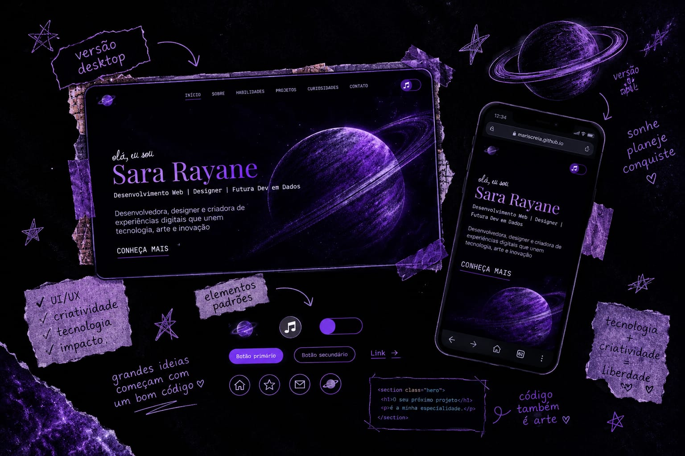

Meu Portfólio
Design - UI/UX e Desenvolvimento Web
Este portfólio é, além de uma forma de apresentar meu trabalho, um registro da minha trajetória aprendendo desenvolvimento web e design. Ele foi sendo construído enquanto eu aprendia, testava ideias, mudava decisões e descobria novas possibilidades para transformar aquilo que imaginava em algo que realmente funcionasse.
Desde o início, eu queria fugir de um portfólio com aparência genérica. Queria criar algo que tivesse personalidade e que também pudesse mostrar um pouco da forma como penso e enxergo meus próprios projetos. Foi daí que surgiu a identidade visual baseada em tons escuros e roxos, colagens, fotografias, texturas e o Saturno como um dos elementos recorrentes.
Processo
A primeira etapa foi o planejamento do layout no Figma. Antes de começar a programar, explorei referências, organizei as seções e testei diferentes formas de apresentar minhas informações. Aos poucos, fui construindo a identidade visual e definindo como cada parte do portfólio deveria se comportar.
Depois começou a parte em que as coisas ficaram mais interessantes — e um pouco caóticas. KKKKK. Transformar o que estava no Figma em código exigiu que eu entendesse melhor HTML, CSS e JavaScript, além de aprender a lidar com problemas que simplesmente não existiam enquanto tudo ainda era um protótipo.
Durante esse processo, fui construindo as páginas, ajustando os elementos, criando as colagens, testando interações e descobrindo como fazer a experiência que eu tinha imaginado realmente funcionar. Algumas ideias precisaram ser refeitas, outras mudaram completamente no caminho.
O projeto também acabou se tornando uma forma de aprender enquanto desenvolvo. Em vez de separar completamente estudo e prática, fui usando o próprio portfólio como laboratório: quando surgia uma coisa que eu não sabia fazer, eu estudava, testava e tentava encaixar aquele conhecimento no projeto.
Ainda estou aprimorando algumas partes, principalmente a adaptação de algumas telas para dispositivos móveis. Por isso, o portfólio continua sendo um projeto em construção — assim como a própria trajetória que ele representa.
Tecnologias
